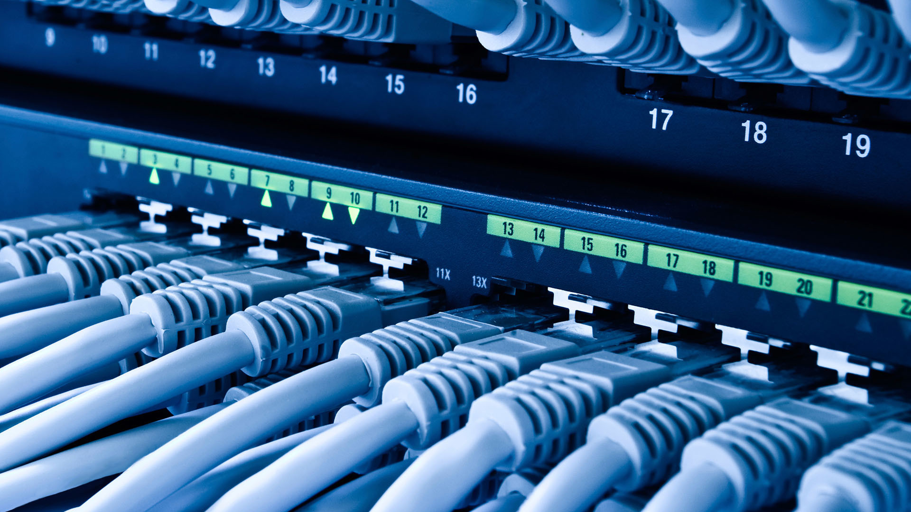

It is also called LAN and designed for small physical areas such as an office, group of buildings or a factory. LANs are used widely as it is easy to design and to troubleshoot. Personal computers and workstations are connected to each other through LANs. We can use different types of topologies through LAN, these are Star, Ring, Bus, Tree etc. LAN can be a simple network like connecting two computers, to share files and network among each other while it can also be as complex as interconnecting an entire building. LAN networks are also widely used to share resources like printers, shared hard-drive etc.

LAN NETWORK

Characteristics of LAN
LAN's are private networks, not subject to tariffs or other regulatory controls. LAN's operate at relatively high speed when compared to the typical WAN. There are different types of Media Access Control methods in a LAN, the prominent ones are Ethernet, Token ring.Applications of LAN
One of the computer in a network can become a server serving all the remaining computers called clients. Software can be stored on the server and it can be used by the remaining clients. Connecting Locally all the workstations in a building to let them communicate with each other locally without any internet access. Sharing common resources like printers etc are some common applications of LAN.Advantages of LAN
Resource Sharing: Computer resources like printers, modems, DVD-ROM drives and hard disks can be shared with the help of local area networks. This reduces cost and hardware purchases. Software Applications Sharing: It is cheaper to use same software over network instead of purchasing separate licensed software for each client a network. Easy and Cheap Communication: Data and messages can easily be transferred over networked computers. Centralized Data: The data of all network users can be saved on hard disk of the server computer. This will help users to use any workstation in a network to access their data. Because data is not stored on workstations locally. Data Security: Since, data is stored on server computer centrally, it will be easy to manage data at only one place and the data will be more secure too. Internet Sharing: Local Area Network provides the facility to share a single internet connection among all the LAN users. In Net Cafes, single internet connection sharing system keeps the internet expenses cheaper.Disadvantages of LAN
High Setup Cost: Although the LAN will save cost over time due to shared computer resources, but the initial setup costs of installing Local Area Networks is high. Privacy Violations: The LAN administrator has the rights to check personal data files of each and every LAN user. Moreover he can check the internet history and computer use history of the LAN user. Data Security Threat: Unauthorised users can access important data of an organization if centralized data repository is not secured properly by the LAN administrator. LAN Maintenance Job: Local Area Network requires a LAN Administrator because, there are problems of software installations or hardware failures or cable disturbances in Local Area Network. A LAN Administrator is needed at this full time job. Covers Limited Area: Local Area Network covers a small area like one office, one building or a group of nearby buildings.